Skin Problems
Some skin problems are caused by diseases or irritations that affect the skin
only—such as ringworm, diaper rash, or warts. Other skin problems are signs of diseases that affect the whole body—such as the rash of measles or the sore, dry patches of pellagra (malnutrition). Certain kinds of sores or skin conditions may be signs of serious diseases—like tuberculosis, syphilis, leprosy, or HIV infection.
This chapter deals only with the more common skin problems in rural areas.
However, there are hundreds of diseases of the skin. Some look so much alike that they are hard to tell apart—yet their causes and the specific treatments they require may be quite different.
If a skin problem is serious or gets worse in spite of treatment, seek medical help.
Many skin problems can be helped by keeping the body clean. Try to wash once
a day with mild soap and clean water. If the skin becomes too dry, wash less often and do not use soap every time. Try rubbing petroleum gel (Vaseline), glycerin, or vegetable oils into the skin after bathing. Wear loose cotton clothing.
GENERAL RULES FOR TREATING SKIN PROBLEMS
Although many skin problems need specific treatment, there are a few general
measures that often help:
RULE #1
RULE #2
If the affected area is hot and
If the affected area itches, painful, or oozes pus, treat it stings, or oozes clear fluid, with heat. Put hot, moist cloths treat it with cold. Put cool, wet on it (hot compresses).
cloths on it (cold compresses).
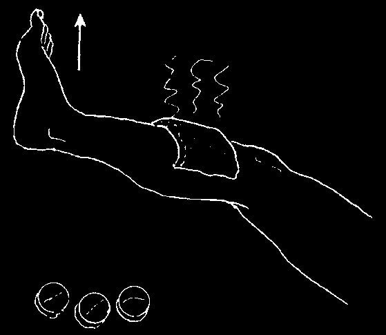

RULE #1 (in greater detail)
If the skin shows signs of serious infection such as:
• inflammation (redness or darkening of skin around the affected areas)
• swelling
• pain
• heat (it feels hot)
• pus
Do the following:
♦ Keep the affected part still and elevate
it (put it higher than the rest of the body).
♦ Apply hot, moist cloths.
♦ If the infection is severe or the person
has a fever, give antibiotics (penicillin, a sulfonamide, or erythromycin).
Danger signs include: swollen lymph nodes, a red or dark line above the infected area, or a bad smell. If these do not get better with treatment use an antibiotic and seek medical help quickly.
RULE #2 (in greater detail)
If the affected skin forms blisters or a crust, oozes, itches, stings, or burns, do the following:
♦ Apply cloths soaked in cool water
with white vinegar (2 tablespoons of vinegar in 1 quart of pure of boiled water).
♦ When the affected area feels better, no longer oozes, and has formed tender new skin, lightly spread on a mixture of talc and water (1 part talc to 1 part water).
♦ When healing has taken place, and
the new skin begins to thicken or flake, rub on a little vegetable lard or body oil to soften it.
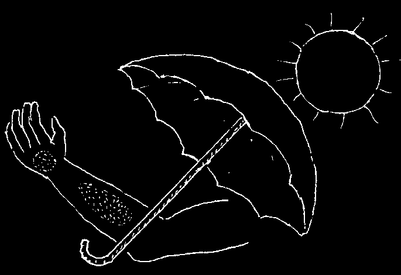
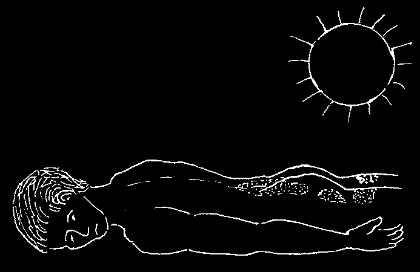
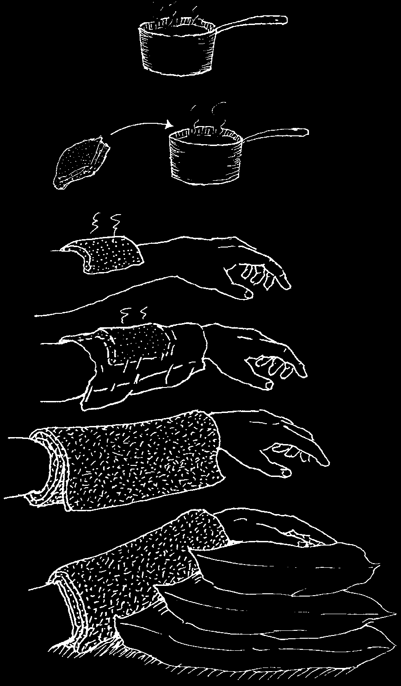
RULE #3
RULE #4
If the skin areas affected
If the skin areas most affected are are on parts of the body usually covered by clothing, expose often exposed to sunlight, them to direct sunlight for 10 to 20 protect them from the sun.
minutes, 2 or 3 times a day.
Instructions for Using Hot Compresses (Hot Soaks)
1. Boil water and allow it to cool until you can just hold your hand in it.
2. Fold a clean cloth so it is slightly larger than the area you want to treat, wet the cloth in the hot water, and squeeze out the extra water.
3. Put the cloth over the affected skin.
4. Cover the cloth with a sheet of thin plastic or cellophane.
5. Wrap it with a towel to hold in the heat.
6. Keep the affected part raised.
7. When the cloth starts to cool, put it back in the hot water and repeat.
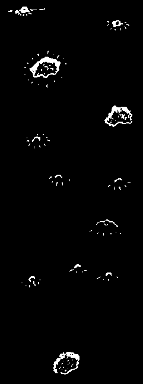


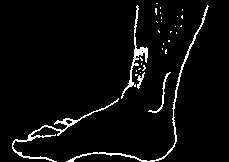


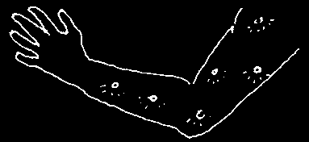

SKIN PROBLEMS—A Guide to Identification
IF THE SKIN
AND LOOKS
YOU MAY
SEE
HAS:
LIKE:
HAVE:
PAGE:
Tiny bumps or sores with much itching—first between fingers, scabies small or on the wrists, or the waist.
pimple-like sores
Pimples or sores with pus or inflammation, often from infection scratching insect bites. May from bacteria cause swollen lymph nodes.
impetigo
Irregular, spreading sores
(bacterial with shiny, yellow crusts.
infection)
acne,
Pimples on young people’s faces, pimples, sometimes chest and back, blackheads often with small heads of pus.
syphilis without itching or pain.
venereal
A sore on the genitals.
lymphogranuloma with pain and pus.
chancroid ulcers from bad
A large chronic (unhealing) sore surrounded circulation by purplish skin—on or near the ankles of
(possibly older people with varicose veins.
a large, open diabetes)
sore or
Sores over the bones and joints skin ulcer of very sick persons who cannot bed sores get out of bed.
Sores with loss of feeling on the feet or hands. (They do not hurt leprosy even when pricked with a needle.)
A bump and then a sore that will not leishmaniasis heal, anywhere on the body or face.
A warm, painful swelling that eventually may break abscess or boil open and drain pus.
lumps under mastitis the skin
A warm, painful lump in
(bacterial the breast of a woman infection), breastfeeding.
possibly cancer cancer
A lump that keeps growing.
(also see
Usually not painful at first.
lymph nodes)
river blindness
One or more round lumps on the head, neck, or upper body (or
(also see central body and thighs).
lymph nodes)


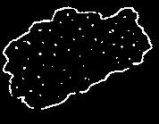


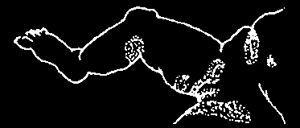


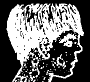
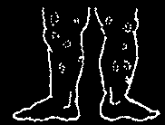

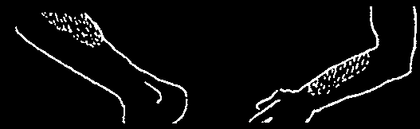

A Guide to Identification
IF THE SKIN
AND LOOKS
YOU MAY
SEE
HAS:
LIKE:
HAVE:
PAGE:
swollen
Nodes on the side of the neck scrofula (a type of lymph nodes that continuously break open tuberculosis)
and scar.
Nodes in the groin that venereal continuously break open lymphogranuloma and scar.
chancroid large spots
Dark patches on the forehead and or patches mask of cheeks of pregnant women.
pregnancy
Scaly, cracking areas that look like sunburn pellagra (a type dark on the arms, legs, neck, of malnutrition)
or face.
Dark spots on the skin or in the mouth
Kaposi’s Sarcoma that start small and then grow. They look
(KS, cancer related to the like swollen bruises. They are painless.
HIV virus).
Purple spots or peeling sores malnutrition on children with swollen feet.
Round or irregular patches tinea versicolor on the face or body,
(fungus infection)
especially of children.
white that begin with reddish pinta
White patches, or bluish pimples.
(infection)
especially on hands, feet, or lips.
that begin without vitiligo other signs.
(loss of color, nothing more)
Reddish or blistering patches on the cheeks or behind the knees eczema and elbows of young children.
erysipelas
A reddish, hot, painful
(cellulitis or very area that spreads rapidly.
serious bacterial reddish infections)
A reddish area between diaper rash from the baby’s legs.
urine or heat
Beef-red patches with white, moniliasis milky curds in the skin folds.
(yeast infection)
Raised reddish or gray psoriasis reddish patches with silvery scales;
or gray especially on elbows and
(or sometimes knees; chronic (long-term).
tuberculosis)